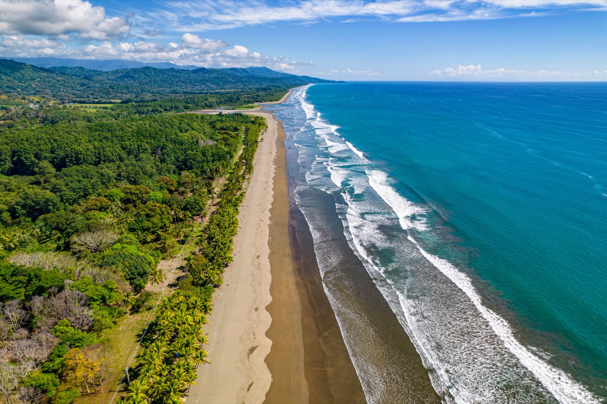

Moving to Costa Rica
A grounded 2026 guide to relocating to Costa Rica: the real cost of living, which is higher than people expect, how safe it is, the residency routes, healthcare, and where the pura-vida life works best.

Costa Rica sells itself on pura vida, and a lot of it is true. It is a stable democracy with no army since 1948, wrapped in lush nature, with universal healthcare and one of the happiest populations on earth. It is also the most established expat destination in Central America. The part most guides skip is that it costs more than people expect, often more than Panama or Mexico. Here is the real picture: what it costs, how safe it is, how to stay, and where it works best.
At a glance
- Region matters more than country. Guanacaste costs about twice San Isidro for the same life. Both are Costa Rica.
- A couple needs $2,500 to $3,500 in most of the country, and $3,500 to $5,000 in the beach towns.
- Four residency routes. Pensionado at $1,000 a month of pension, Rentista at $2,500 a month or a $60,000 deposit, Inversionista, and the Digital Nomad Visa.
- The investor threshold is unsettled since the Law 9996 sunset passed on 14 July 2026. Verify it directly before moving money.
- The Caja is mandatory, not free. Budget 7 to 11 percent of declared income, and expect waits for anything non-urgent.
- It uses the colon, not the dollar. Currency movement changes your real budget, which is the main structural difference from Panama.
- Americans get 180 days visa free. Apostille every document before you leave the US.
Why people move here
- Stability. A peaceful, long-standing democracy with no military and strong institutions.
- Nature. Around 5% of the world's species, national parks everywhere, two coastlines, and cloud forests.
- Universal healthcare. The public "Caja" system, plus excellent, affordable private care.
- Established expat infrastructure. Decades of relocations mean services, communities, and know-how are everywhere.
- The pura-vida culture. A relaxed, friendly, environmentally-minded way of life.
- Climate variety. Hot coasts, and cool, spring-like Central Valley highlands.

What it costs to live in Costa Rica
This is the part to get straight: Costa Rica is not the bargain many assume. Import taxes, a strong colón, and its own popularity have pushed prices up. A comfortable couple usually needs $2,500 to $3,500 a month, with tourist-heavy coastal areas like Tamarindo and Nosara running higher and inland towns more affordable. A realistic mid-range monthly budget for a couple:
| Monthly expense | Typical range (a couple, USD) |
|---|---|
| Rent (1–2BR, outside tourist zones) | $800–1,600 |
| Groceries | $450–700 |
| Dining out & entertainment | $250–450 |
| Utilities + internet | $120–250 |
| Healthcare (Caja + private top-up) | $150–400 |
| Transport | $150–350 |
| Typical total (comfortable) | $2,500–3,500 |
You can live for less inland and away from the tourist coasts. The Valley of El General around San Isidro is a fraction of the coastal cost. Just budget honestly, because imported goods, cars, and beach-town rents are where the sticker shock lives. Figures are 2026 approximate.

What it costs, by region
The national average hides the thing that matters. Costa Rica's price spread between regions is larger than the spread between Costa Rica and its neighbours, so where you land decides your budget more than which country you picked.
| Region | Couple, monthly | Climate | The trade |
|---|---|---|---|
| Valley of El General San Isidro, Perez Zeledon | $1,800 to $2,400 | Warm valley, real seasons | Cheapest by a wide margin, but the smallest English-speaking community |
| Turrialba and the east | $1,800 to $2,400 | Green, wet, mild | Very few foreigners, which is either the point or the problem |
| Central Valley Atenas, Grecia, San Ramon | $2,200 to $3,000 | Spring-like all year, no AC | Best balance of climate, hospitals and airport access. The default pick |
| Lake Arenal | $2,200 to $3,000 | Cool, lush, windy, wet | Beautiful, tight community, two hours from serious medical care |
| Southern Pacific Dominical, Uvita, Ojochal | $2,800 to $3,800 | Hot, humid, heavy green season | Jungle meets ocean. Roads and services are still catching up |
| Guanacaste Tamarindo, Nosara, Coco | $3,500 to $5,000 | Hot and dry, real dry season | Priced for tourists, not residents. Water scarcity is a genuine issue |
| Escazu and Santa Ana San Jose metro | $3,000 to $4,500 | Mild, urban | Top hospitals and every convenience, at close to US prices |
Is Costa Rica safe?
Costa Rica is one of the safer countries in Latin America and a comfortable place for expats, though it pays to be clear-eyed. The real day-to-day risk is property crime and opportunistic theft, meaning break-ins, things taken from cars, and grabbed beach bags, and rates have risen with tourism in some hotspots. Violent crime stays low by regional standards and rarely touches the expat lifestyle. Use normal precautions, keep valuables out of sight, secure your home, stay alert in tourist zones, and most expats feel very safe.
Residency options
Four routes carry almost everyone. All of them grant temporary residency first, convert to permanent at year three, and open citizenship eligibility at year seven.
| Route | Requirement | Suits |
|---|---|---|
| Pensionado | $1,000 a month in lifetime pension income. US Social Security, a UK state or workplace pension and Canadian CPP all qualify. No minimum age. | Retirees, and anyone with a genuine lifetime annuity |
| Rentista | $2,500 a month guaranteed for 24 months, or a $60,000 deposit in a Costa Rican bank. Income must originate outside Costa Rica. | The not-yet-retired |
| Inversionista | A qualifying investment in property, a business, securities or a sustainable project, held in your personal name rather than a corporation. Reforestation qualifies at a lower threshold. | Buyers who were investing anyway |
| Digital Nomad | Remote income from a foreign employer or clients. Not residency, but a long stay without one. | Working remotely, testing the country |
The investor threshold is genuinely unsettled right now
Law 9996 cut the Inversionista minimum from $200,000 to $150,000, with a sunset date of 14 July 2026. That date has passed. Whether the figure reverted to $200,000, was renewed at $150,000, or was set somewhere else by executive decree is not something any published guide should be stating as fact, including this one, because the amount sits within the executive's discretion and sources currently contradict each other.
If the investor route is your plan, this is a phone call to a Costa Rican immigration attorney or the DGME directly, not a thing to read about. Do not move capital on a number from a website, ours included.
Two constraints that catch people. Pensionado and Rentista holders cannot work as employees in Costa Rica, though they can own businesses and take investment income. And Rentista is where applications most often stall, because since 2025 the DGME wants a bank certification with actual transaction logs proving the income has been arriving, rather than a letter promising it will.
Documents are the other quiet failure. Every foreign document needs an apostille from the issuing authority, and time-sensitive documents such as police records and birth certificates usually must be under six months old on the day you file, not the day you collected them. People routinely gather a full file, wait on an appointment, and have to redo half of it.
The Caja, and what it actually gets you
Healthcare is a major draw. The public Caja (CCSS) system provides universal coverage to legal residents for an income-based monthly contribution, and the private system is excellent and affordable, with top hospitals in San José that serve a real medical-tourism market. Many expats keep the Caja for major coverage and pay out of pocket, or hold private insurance, for faster, more comfortable private care. Quality is high and costs are a fraction of the US.
The detail worth knowing before you count on it: Caja enrolment is mandatory for legal residents, not optional, and the contribution is assessed on your declared income, typically running somewhere between 7 and 11 percent of it. For a couple on a $3,000 monthly pension that is roughly $200 to $300 a month, which is a real line item rather than a rounding error.
What you get for it is genuine universal coverage with no exclusion for pre-existing conditions and no age limit, which is a meaningful advantage over Panama, where private insurers stop accepting new members around 75. What you do not get is speed. Non-urgent specialist appointments and elective surgery can carry waits measured in months. Emergency and serious care is prompt and competent.
Which is why most foreigners run both systems. Caja for catastrophic cover and prescriptions, cash or a private policy for anything they do not want to wait for. A private GP visit runs about $60 to $90 and a specialist $80 to $150, so paying cash for routine care while holding the Caja underneath is a common and rational arrangement.
If you are American
Four things are specific enough to be worth separating out.
- You get 180 days visa free. That is unusually generous and it is enough to scout properly, live somewhere through part of a green season, and file for residency from inside the country. Use it rather than deciding from a two week visit.
- Apostille before you leave. Birth certificates, marriage certificates, FBI background checks and pension letters all need an apostille from the issuing US state or federal agency. Doing this from Costa Rica is slow and expensive. Doing it from your own state before you fly costs very little.
- Your Social Security qualifies you. The average US benefit clears the $1,000 Pensionado threshold on its own, and it is the single most common route Americans use.
- You still file with the IRS. Citizenship-based taxation follows you. Costa Rica will not tax your US pension, but the US will still want a return, and possibly an FBAR if your Costa Rican accounts cross $10,000 combined at any point in the year.
The dollar point is worth making plainly, because it is the main structural difference from Panama. Costa Rica uses the colón, not the dollar. Your pension arrives in dollars and your rent, groceries and utilities are priced in colones, so exchange rate movement changes your real budget in a way it simply cannot in Panama. The colón strengthened considerably against the dollar in recent years, which is a large part of why Costa Rica feels more expensive to Americans than it did a few years ago, without anything local actually changing price.
The tax position
Costa Rica is territorial. It taxes income earned inside Costa Rica and leaves foreign-source income alone, so a US pension, Social Security or dividends from a foreign brokerage are not taxed locally.
What is taxable is anything Costa Rica-source, and rental income is the one that catches property buyers. Short-term rental income is taxable, and Costa Rica applies value added tax to rentals and most services at a standard 13 percent. Property transfer tax runs about 1.5 percent on purchase, and annual property tax is 0.25 percent of registered value, which is low. There is a separate luxury home tax on higher-value residential construction.
Corporations carry an annual flat fee whether or not they trade, which matters because foreigners are often advised to hold property through a Costa Rican corporation. For the Inversionista route specifically that advice is actively wrong, since the investment must be registered in your personal name.
The seven places foreigners settle
- The Central Valley (Atenas, Grecia, Escazú, San Ramón) has a spring-like climate close to San José, the airport, and top hospitals. It is the most popular expat base.
- San Isidro and the Valley of El General is a real Costa Rican city in a fertile valley, at a fraction of the coast's land cost. See our full guide.
- The Southern Pacific (Dominical, Uvita, Ojochal) is where jungle meets beach, with whale watching and a growing community.
- Guanacaste and the North Pacific (Tamarindo, Nosara, Playas del Coco) is the beach-and-surf coast: beautiful, drier, and pricier.
- Lake Arenal offers lush, cooler lake-and-volcano scenery and a tight expat community.
The trade-offs to know
- It costs more than expected. This is the big one, so don't assume Central-American bargain prices.
- Bureaucracy, the famous "trámites," is slow. Residency, utilities, and imports test your patience.
- Property crime is the main safety issue, so secure your home and belongings.
- The rainy season is intense. The green season, roughly May through November, brings serious rain, especially on the coasts.
- Infrastructure has gaps. Rural roads, occasional power and water cuts, and "tico time" are part of the deal.
How to make the move
- Scout in the green season. Visit candidate areas during the rains to see the real climate.
- Rent for six to twelve months before buying anywhere, because regions differ enormously.
- Pick a residency route with a Costa Rican immigration attorney: Pensionado, Rentista, Nomad, or Inversionista.
- Register with the Caja and sort private care once you are a resident.
- Buy inland for value. Land away from the tourist coasts stretches your budget dramatically.
Exploring Costa Rica for a home?
SORA helps foreign buyers find land, build, and settle in Panama and Costa Rica, with fixed-price design-build and people on the ground. The easiest place to start is what a home actually costs.
See the Valley of El General →Frequently asked questions
How much does it cost to live in Costa Rica?
A comfortable couple usually needs $2,500 to $3,500 a month, covering rent, food, utilities, healthcare, and transport. It runs higher in tourist-heavy coastal areas like Tamarindo or Nosara and lower inland, such as the Central Valley or the San Isidro area. Costa Rica is pricier than many expect, largely because of import taxes and its popularity.
Is Costa Rica safe for expats?
Relatively, yes. It is one of the safer countries in Latin America, with low violent crime. The real day-to-day risk is property crime and opportunistic theft, especially in tourist areas, so securing your home and belongings and using normal precautions matters. Most expats feel very safe living there.
What are the residency options for Costa Rica?
The main routes are Pensionado (retirees with a pension of about $1,000 a month), Rentista (proof of around $2,500 a month in income or a qualifying deposit), Inversionista (a qualifying investment), and the Digital Nomad Visa (for remote workers meeting an income threshold). Thresholds change, so confirm current requirements with a Costa Rican immigration attorney.
Is healthcare good in Costa Rica?
Yes. Costa Rica has universal public healthcare, the Caja or CCSS, available to legal residents for an income-based contribution, plus an excellent and affordable private system with top hospitals in San José. Many expats combine both, and overall quality is high at a fraction of US costs.
Is Costa Rica or Panama cheaper to live in?
Panama is generally cheaper than Costa Rica, especially in Panama's interior towns, and it uses the US dollar. Costa Rica tends to cost more because of import taxes and its popularity, though it offers universal healthcare and famous stability. See our companion guide, Moving to Panama, to compare directly.
Sources & verification
Figures in this guide were checked against primary and authoritative sources on 14 August 2026. Immigration, tax, and cost figures change, so always confirm the current rules with the official body or a licensed professional before acting.
- International Living, Costa Rica cost of living & retirement
- Numbeo, Costa Rica cost of living data
- Costa Rica Migración, residency categories (confirm current rules)